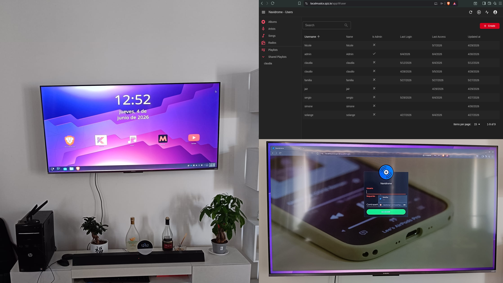

Self-Hosted Media Infrastructure
Tech: Docker, Docker Compose, Linux, Cloudflare, Navidrome, AdGuard Home, Bash, Subsonic API
About the Project
A comprehensive self-hosted media infrastructure built from the ground up using repurposed hardware. This project demonstrates full-stack infrastructure management, from physical assembly to secure remote access. A custom-built PC serves as a dedicated media server running Navidrome via Docker Compose, exposing a personal music library through the Subsonic API to any client, anywhere. Remote access is secured through a Cloudflare Tunnel, eliminating the need for public IP exposure or port forwarding. The same machine doubles as a living-room media center, connected directly to a TV and configured with a restricted user account for safe daily use. The browsing experience is hardened through a network-wide AdGuard Home instance blocking ads and malicious domains, with Brave browser deployed for additional privacy.
Features & Infrastructure
- Custom Hardware Assembly: Built a fully functional server from spare and recycled components, including diagnostics and compatibility testing.
- Navidrome Music Server: Containerized deployment via Docker Compose with persistent volumes and automated restart policies.
- Custom Domain & Cloudflare Integration: DNS management and Tunnel configuration for secure, global access without exposing the home network.
- Zero-Trust Remote Access: Cloudflare Tunnel provides encrypted connectivity without opening router ports or relying on dynamic DNS.
- Subsonic API: Full compatibility with any Subsonic client, enabling private music streaming on any device from any location.
- Media Center Workstation: Direct TV connectivity with a dedicated, non-privileged user environment for safe daily media consumption.
- Network-Wide Ad Blocking: AdGuard Home DNS server filtering ads, trackers, and harmful content across all connected devices.
- Privacy-Hardened Browsing: Brave browser deployment with built-in tracker blocking and HTTPS-Everywhere enforcement.
Informazioni sul Progetto
Un'infrastruttura media self-hosted costruita da zero utilizzando hardware riciclato. Questo progetto dimostra la gestione infrastrutturale full-stack, dall'assemblaggio fisico all'accesso remoto sicuro. Un PC custom serve come server media dedicato con Navidrome tramite Docker Compose, esponendo una libreria musicale personale tramite API Subsonic a qualsiasi client, ovunque. L'accesso remoto è protetto tramite Cloudflare Tunnel, eliminando la necessità di esporre IP pubblici o aprire porte sul router. La stessa macchina funge anche da media center in soggiorno, collegata direttamente a una TV e configurata con un account utente limitato per un utilizzo quotidiano sicuro. L'esperienza di navigazione è rafforzata da un'istanza AdGuard Home a livello di rete che blocca pubblicità e domini malevoli, con il browser Brave per una privacy aggiuntiva.
Caratteristiche e Infrastruttura
- Assemblaggio Hardware Custom: Costruito un server funzionale da componenti spare/riciclati, inclusa diagnostica e test di compatibilità.
- Server Musicale Navidrome: Deploy containerizzato via Docker Compose con volumi persistenti e policy di riavvio automatico.
- Dominio Custom e Integrazione Cloudflare: Gestione DNS e configurazione Tunnel per accesso sicuro globale senza esporre la rete domestica.
- Accesso Remoto Zero-Trust: Cloudflare Tunnel offre connettività crittografata senza aprire porte sul router o affidarsi a DNS dinamici.
- API Subsonic: Piena compatibilità con qualsiasi client Subsonic per lo streaming privato su qualsiasi dispositivo e da qualsiasi luogo.
- Workstation Media Center: Connettività TV diretta con un ambiente utente dedicato e non privilegiato per una fruizione media sicura.
- Blocco Pubblicità a Livello Rete: Server DNS AdGuard Home che filtra pubblicità, tracker e contenuti dannosi su tutti i dispositivi connessi.
- Navigazione Rinforzata per la Privacy: Deploy del browser Brave con blocco tracker integrato e forzatura HTTPS.